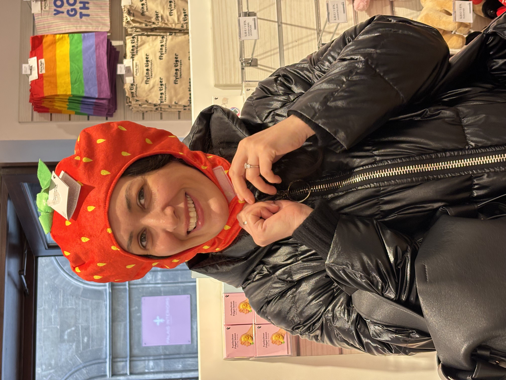

Gestalt Therapist | EAGT Certified
💬 Message on WhatsAppIndividual consultations and therapy for adults seeking support through life challenges and personal growth.
Areas I can help you with:
Come to a consultation with whatever is on your mind. I offer a safe, confidential, and supportive environment.
I am a certified Gestalt therapist dedicated to helping individuals connect with themselves, process emotions, and build fulfilling lives.
Qualifications & Credentials:
Ready to take the next step? Feel free to reach out directly with any questions or to schedule an initial consultation.